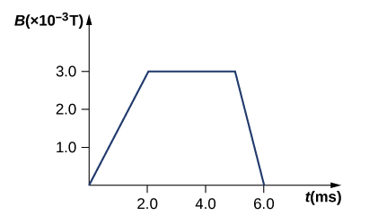
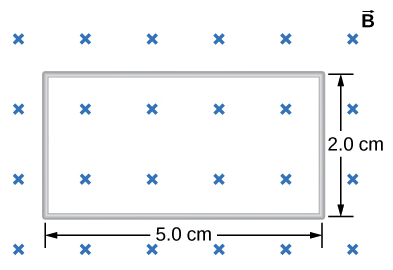
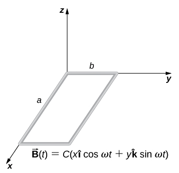
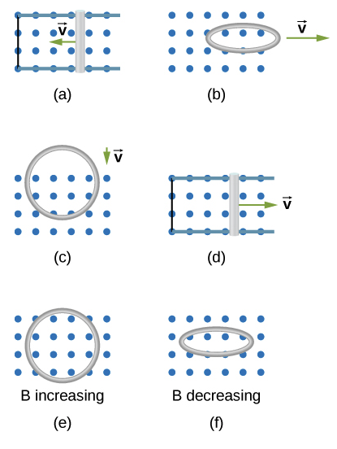
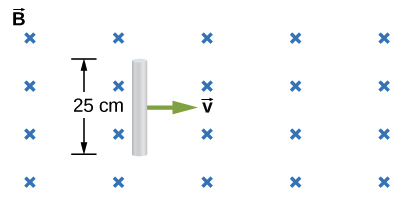
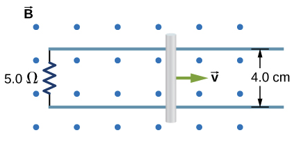
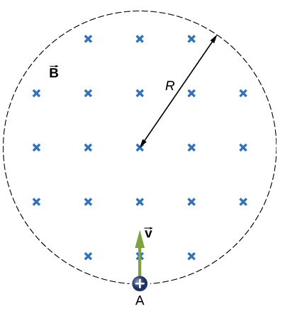

B6.5 Problems#
Problem 6.1: Magnetic Flux Through an Inclined Surface#
A uniform magnetic field of magnitude \(B = 0.25\ \text{T}\) points in the positive \(z\)-direction.
A flat, rectangular surface of area \(A = 0.40\ \text{m}^2\) is placed so that its normal makes an angle of \(60^\circ\) with the magnetic field.
(a) Find the magnetic flux through the surface.
(b) What if the surface were rotated so that it lies parallel to the magnetic field lines?
(c) What if the surface were rotated so that it is perpendicular to the magnetic field lines?
Problem 6.1: Solution
(a) Find the magnetic flux through the surface.
Solution
Step 1: Recall the definition of magnetic flux
For a uniform field:
where:
\(B\) = magnitude of magnetic field,
\(A\) = surface area,
\(\theta\) = angle between the field and the surface normal.
Step 2: Substitute the known values
Given:
\(B = 0.25\ \text{T}\)
\(A = 0.40\ \text{m}^2\)
\(\theta = 60^\circ\)
So:
Step 3: Evaluate
\(\cos(60^\circ) = 0.5\)
Thus:
(where \(1\ \text{Wb}\) = \(1\ \text{T}\cdot\text{m}^2\))
Answer
The magnetic flux through the surface is:
(b) What if the surface were rotated so that it lies parallel to the magnetic field lines?
If the surface is parallel to the field, the normal is perpendicular to the field, so \(\theta = 90^\circ\):
No magnetic flux passes through the surface in this orientation.
(c) What if the surface were rotated so that it is perpendicular to the magnetic field lines?
If the surface is perpendicular to the field, the normal is aligned with the field, so \(\theta = 0^\circ\):
Key Takeaways
Magnetic flux is maximal when the surface is perpendicular to the field.
Magnetic flux is zero when the surface is parallel to the field.
Always measure \(\theta\) as the angle between the field and the surface normal.
Problem B6.2
A 50-turn coil has a diameter of \(15\) cm. The coil is placed in a spatially uniform magnetic field of magnitude \(0.50\) T so that the face of the coil and the magnetic field are perpendicular. Find the magnitude of the emf induced in the coil if the magnetic field is reduced to zero uniformly in
0.10 s
1.0 s
60 s.
This problem is a slightly modified version from OpenStax. Access for free here
# DIY Cell
Problem B6.3
Repeat your calculations of the preceding problem’s time of 0.1 s with the plane of the coil making an angle of
\(30.0^\circ\)
\(60.0^\circ\)
\(90.0^\circ\)
with the magnetic field.
This problem is a slightly modified version from OpenStax. Access for free here
# DIY Cell
Problem B6.4
The magnetic field through a circular loop of radius \(10.0\) cm varies with time as shown below. The field is perpendicular to the loop. Plot the magnitude of the induced emf in the loop as a function of time.

This problem is a slightly modified version from OpenStax. Access for free here
# DIY Cell
Problem B6.5
The accompanying figure shows a single-turn rectangular coil that has a resistance of \(2.0~\Omega\). The magnetic field at all points inside the coil varies according to \(B = B_{0}\textrm{e}^{-\alpha t}\), where \(B_0 = 0.25\) T and \(\alpha = 200.0\) Hz. What is the current induced in the coil at
\(t = 0.0010\) s
\(t = 0.0020\) s
\(t = 2.0\) s?

This problem is a slightly modified version from OpenStax. Access for free here
# DIY Cell
Problem B6.6
A rectangular wire loop with length a and width b lies in the \(xy\)-plane, as shown below. Within the loop there is a time-dependent magnetic field given by \(\vec{B}(t) = C\left[x\cos(\omega t)~\hat{i} + y\sin(\omega t)~\hat{k}\right]\) T. Determine the emf induced in the loop as a function of time.

This problem is a slightly modified version from OpenStax. Access for free here
# DIY Cell
Problem B6.7
A single-turn circular loop of wire of radius \(50.0\) mm lies in a plane perpendicular to a spatially uniform magnetic field. During a \(0.10\) s time interval, the magnitude of the field increases uniformly from \(200.0\) mT to \(300.0\) mT.
Determine the emf induced in the loop.
If the magnetic field is directed out of the page, what is the direction of the current induced in the loop?
This problem is a slightly modified version from OpenStax. Access for free here
# DIY Cell
Problem B6.8
When a magnetic field is first turned on, the flux through a 20-turn loop varies with time according to \(\phi_m = 5.0t^2 - 2.0t\), where \(\phi_m\) is in milliwebers, \(t\) is in seconds, and the loop is in the plane of the page with the unit normal pointing outward.
What is the emf induced in the loop as a function of time?
What is the direction of the induced current at t = 0 s?
What is the direction of the induced current at t = 0.10 s?
What is the direction of the induced current at t = 1.0 s?, and (e) 2.0 s?
What is the direction of the induced current at t = 2.0 s?
This problem is a slightly modified version from OpenStax. Access for free here
# DIY Cell
%reset -f
import sympy as sym
from sympy.abc import t
N = 20
flux = (5.0*t**2 - 2.0*t)/1000 #/1000 since it is given in mW
emf = -N*sym.diff(flux,t)
print('Induced emf: '+str(emf)+' V')
t2 = 0
emf1 = emf.evalf(subs={t:t2})
print('Induced emf: '+str(emf1)+' V')
print('Flux is decreasing, so ')
Induced emf: 0.04 - 0.2*t V
Induced emf: 0.0400000000000000 V
Flux is decreasing, so
Problem B6.9
Use Lenz’s law to determine the direction of induced current in each case.

This problem is a slightly modified version from OpenStax. Access for free here
# DIY Cell
Problem B6.10
A current is induced in a circular loop of radius \(1.5\) cm between two poles of a horseshoe electromagnet when the current in the electromagnet is varied. The magnetic field in the area of the loop is perpendicular to the area and has a uniform magnitude. If the rate of change of magnetic field is \(10.0\) T/s, find the magnitude and direction of the induced current if resistance of the loop is \(25~\Omega\).
This problem is a slightly modified version from OpenStax. Access for free here
# DIY Cell
Problem B6.11
An automobile with a radio antenna \(1.0\) m long travels at \(100.0\) km/h in a location where the Earth’s horizontal magnetic field is \(5.5\times10^{−5}\) T. What is the maximum possible emf induced in the antenna due to this motion?
This problem is a slightly modified version from OpenStax. Access for free here
Problem B6.12
A \(25\) cm rod moves at \(5.0\) m/s in a plane perpendicular to a magnetic field of strength \(0.25\) T. The rod, velocity vector, and magnetic field vector are mutually perpendicular, as indicated in the accompanying figure. Calculate
the magnetic force on an electron in the rod
the electric field in the rod
the potential difference between the ends of the rod
What is the speed of the rod if the potential difference is 1.0 V?

This problem is a slightly modified version from OpenStax. Access for free here
Problem B6.13
The rod shown below moves to the right on essentially zero-resistance rails at a speed of \(v = 3.0\) m/s.
If \(B = 0.75\) T everywhere in the region, what is the current through the \(5.0~\Omega\) resistor?
Does the current circulate clockwise or counterclockwise?

This problem is a slightly modified version from OpenStax. Access for free here
Problem B6.14
Calculate the induced electric field in a \(50\) turn coil with a diameter of \(15\) cm that is placed in a spatially uniform magnetic field of magnitude \(0.50\) T so that the face of the coil and the magnetic field are perpendicular. This magnetic field is reduced to zero in \(0.10\) seconds. Assume that the magnetic field is cylindrically symmetric with respect to the central axis of the coil.
This problem is a slightly modified version from OpenStax. Access for free here
Problem B6.15
Over a region of radius \(R\), there is a spatially uniform magnetic field \(\vec{B}\). At \(t = 0\) s, \(B = 1.0\) T, after which it decreases at a constant rate to zero in \(30\) s.
What is the electric field in the regions where \(r \le R\) and \(r \ge R\) during that 30-s interval?
Assume that \(R =10.0\) cm. How much work is done by the electric field on a proton that is carried once clock wise around a circular path of radius \(5.0\) cm?
How much work is done by the electric field on a proton that is carried once counterclockwise around a circular path of any radius \(r \ge R\)?
At the instant when \(B = 0.50\) T, a proton enters the magnetic field at \(A\), moving a velocity \(\vec{v}\) \(v = 5.0\times 10^6\) m/s) as shown. What are the electric and magnetic forces on the proton at that instant?

This problem is a slightly modified version from OpenStax. Access for free here
Problem B6.16: Induced emf in a Rotating, Expanding Loop in a Changing Magnetic Field#
A circular metal loop (like a flexible conductive ring in a rotating machine) is placed in a region where the magnetic field is changing with time.
At a particular instant:
The magnetic field is increasing at a rate of \(\dfrac{dB}{dt} = 0.30\ \text{T/s}\).
The loop’s radius is expanding at a rate of \(\dfrac{dr}{dt} = 0.002\ \text{m/s}\).
The loop is rotating so that the angle between the magnetic field and the loop’s normal is changing at a rate of \(\dfrac{d\theta}{dt} = 10\ \text{rad/s}\).
At that instant:
\(B = 0.40\ \text{T}\)
\(r = 0.05\ \text{m}\)
\(\theta = 30^\circ\)
Find the magnitude of the induced emf in the loop at this instant.
Problem B6.16 : Solution
Solution
Step 1: Express the magnetic flux
For a flat circular loop:
So:
Step 2: Take the total time derivative
Using the product rule:
And Faraday’s law:
So we need \(A\), \(dA/dt\), etc.
Step 3: Compute the area and its rate of change
Area:
Rate of change of area:
Since \(A = \pi r^2\),
Step 4: Substitute all known values
Use:
\(A = 7.85\times10^{-3}\ \text{m}^2\)
\(\theta = 30^\circ\) → \(\cos\theta \approx 0.866\), \(\sin\theta = 0.5\)
\(B = 0.40\ \text{T}\)
\(dB/dt = 0.30\ \text{T/s}\)
\(dA/dt = 6.28\times10^{-4}\ \text{m}^2/\text{s}\)
\(d\theta/dt = 10\ \text{rad/s}\)
Substitute into:
Step 5: Calculate each term
Due to changing \(B\):
Due to changing \(A\):
Due to changing \(\theta\):
Step 6: Sum them up
Inside the brackets:
Then:
The negative sign tells us the direction opposes the change (Lenz’s law).
Step 7: Final Answer
The magnitude of the induced emf:
Discussion
The dominant contribution is from the rotation term (\(B A \sin\theta\,d\theta/dt\)), which is why generators rely on rotating coils.
The changing \(B\) and expanding area contribute less here but can dominate in other setups.